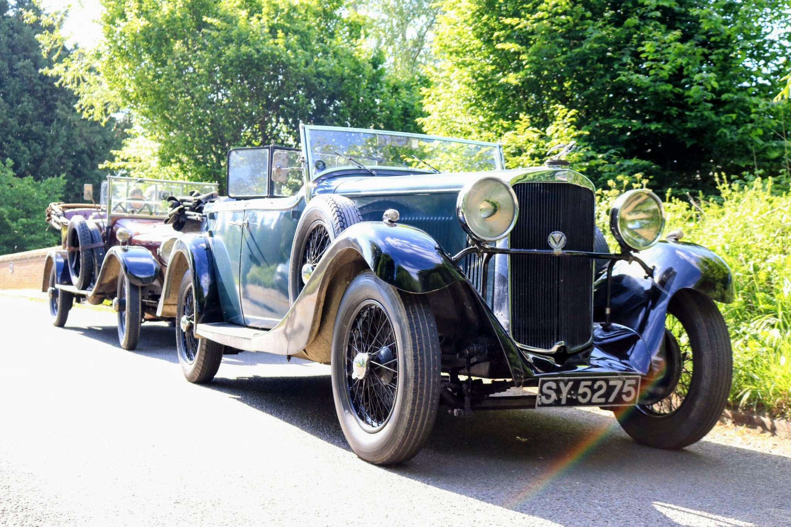

Close ✕
The only Sunbeam Twenty tourer ever made: ninety-two years and an estimated 500,000 miles on the road.

The Sunbeam Motor Car Company Limited was one of Britain's most prestigious automotive manufacturers, renowned for quality engineering and sporting achievement. Founded in Wolverhampton, Sunbeam built a reputation for producing some of the finest motorcars of the early 20th century.
The company was particularly famous for its racing successes, including multiple land speed records and victories at prestigious events like the French Grand Prix. Its road cars combined this racing heritage with luxurious appointments and meticulous craftsmanship.
It has had a fascinating ninety-two years of life since its creation in 1934. It is the only Sunbeam Twenty tourer produced, a one-off, supplied by John Croall & Sons to the Fry family to special order.
In 1939 it was laid up in Scotland, where it stayed until 1958. It was brought back to life and driven south with a sump full of good Scottish water, a journey that cost it a number of bearings. It found a temporary home with a London boys' club in the late 1950s, before being acquired by a Sunbeam specialist in 1960 who owned and cherished it for fifty years. The acquisition was made not for hard cash, but in exchange for two bell tents and a remould tyre for a Bedford van. Over its lifetime it is estimated to have covered over 500,000 miles.
“Not for hard cash, but two bell tents and a remould tyre for a Bedford van.”
Brake and gear lever conspire to make entry to the driving seat an acrobatic feat, though with practice, and a commitment to pilates, access from the driver's side is achievable. The driving position is good: one sits low and looks along the long bonnet, through a shallow windscreen, at a view of the road only slightly obscured by the mascot atop the radiator filler cap. The four-speed gearbox has no synchromesh but features a silent third gear. The large engine (2,916 cc), the comparatively light body and perhaps a rather low gear ratio make the car very flexible: it will accelerate in third from walking pace and drop to 15 mph in top without complaint.
Vintage photographs of the Sunbeam Twenty Tourer through the decades. Click any photograph to enlarge it.